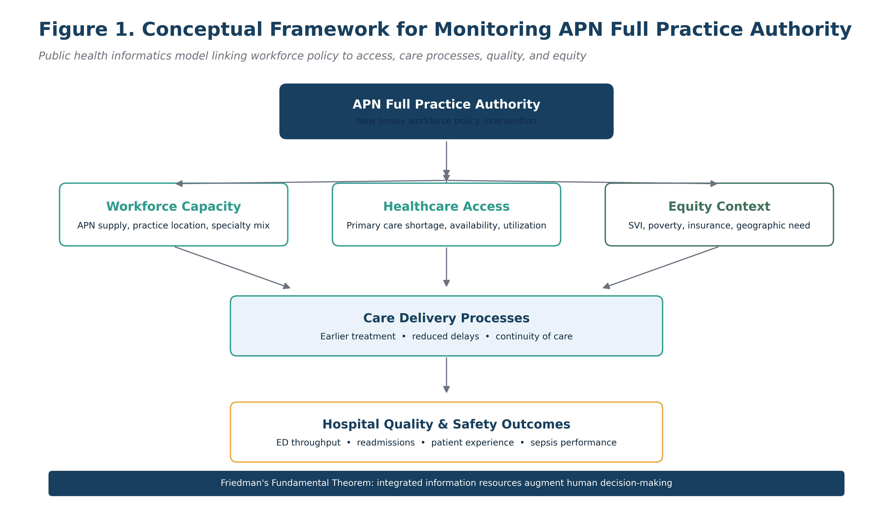
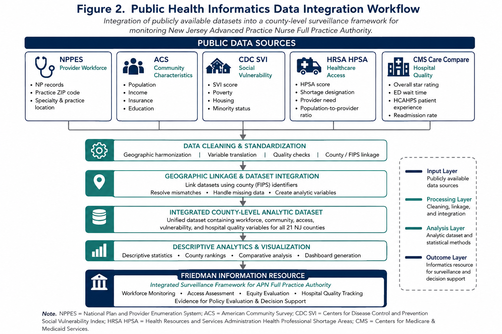
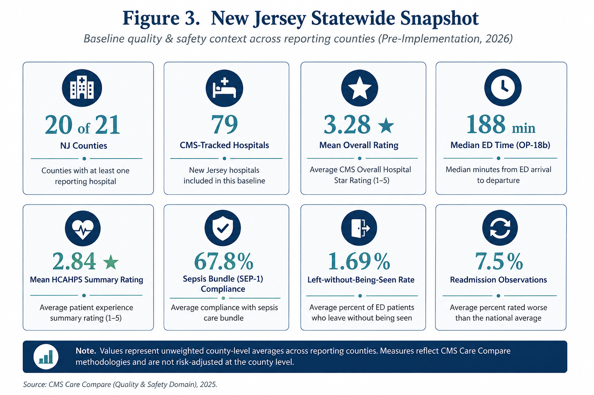
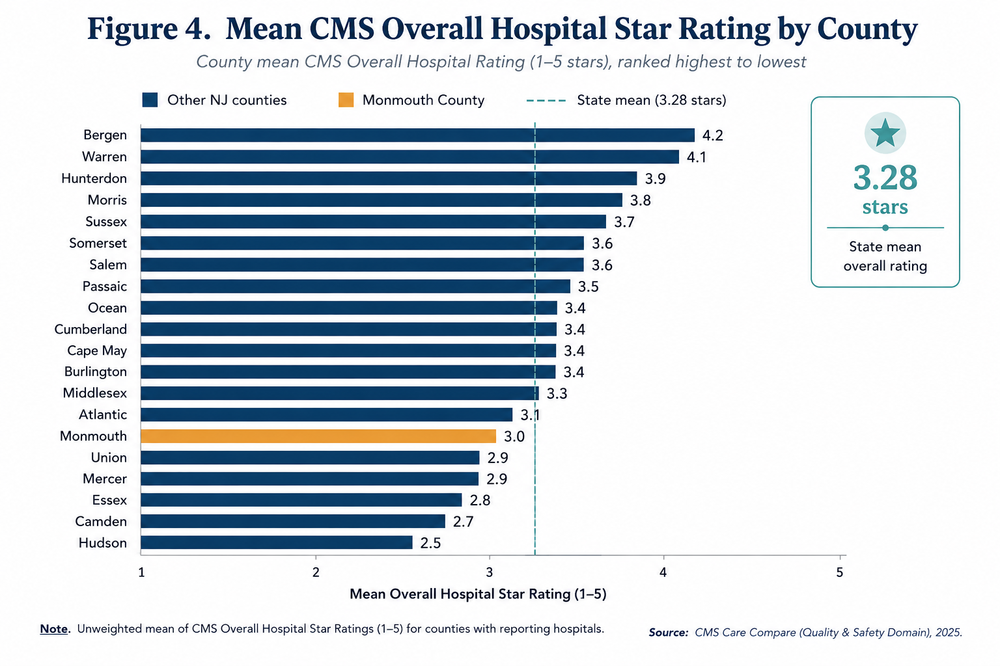
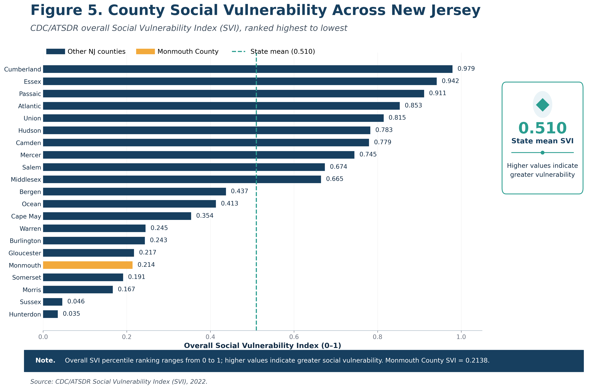
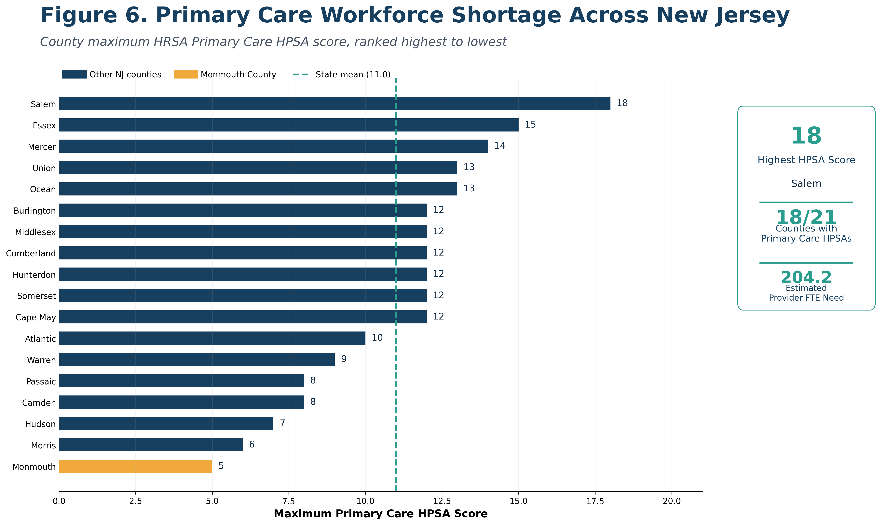
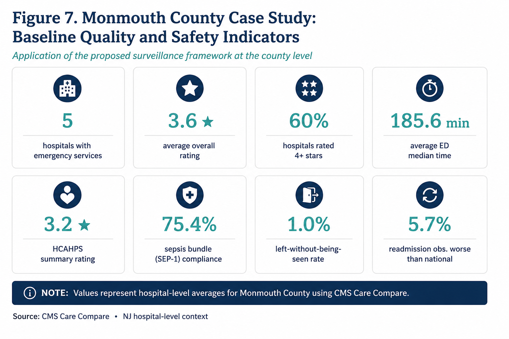
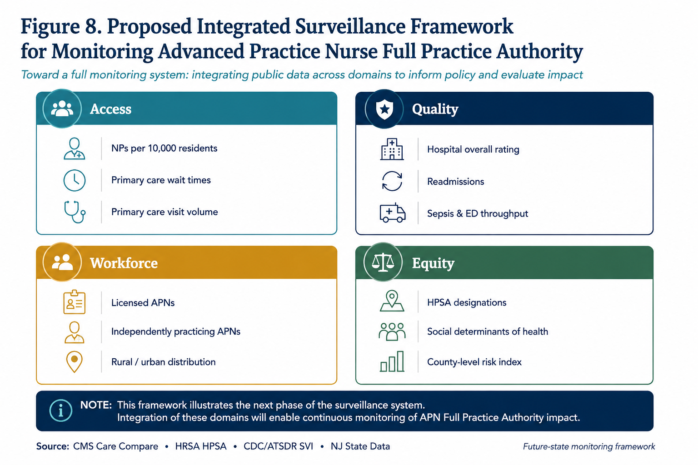

Project purpose
This prototype translates fragmented public information into a unified decision-support resource for longitudinal monitoring of New Jersey Advanced Practice Nurse Full Practice Authority. The final course analysis is descriptive and establishes a pre-implementation baseline; it does not estimate causal effects of FPA.
WorkforceAccessQualityEquity

Statewide hospital quality baseline
CMS Care Compare measures characterize the hospital-quality environment before widespread FPA implementation. These measures are contextual and are not direct measures of APN performance.


Social vulnerability

Primary care shortage

SVI detail
| County | SVI | Population <150% poverty | Uninsured |
|---|---|---|---|
| Cumberland County | 0.979 | 26.8% | 9.6% |
| Essex County | 0.942 | 22.9% | 11.5% |
| Passaic County | 0.911 | 22.4% | 12.5% |
| Atlantic County | 0.853 | 21.1% | 7.7% |
| Union County | 0.815 | 16.1% | 12.1% |
| Hudson County | 0.783 | 22.4% | 11.6% |
| Camden County | 0.779 | 19.1% | 6.7% |
| Mercer County | 0.745 | 16.8% | 7.0% |
| Salem County | 0.674 | 20.7% | 4.8% |
| Middlesex County | 0.665 | 13.3% | 6.7% |
| Bergen County | 0.437 | 10.5% | 6.6% |
| Ocean County | 0.413 | 17.2% | 4.5% |
| Cape May County | 0.354 | 15.3% | 5.6% |
| Warren County | 0.245 | 12.3% | 5.0% |
| Burlington County | 0.243 | 11.1% | 4.1% |
| Gloucester County | 0.217 | 11.8% | 4.3% |
| Monmouth County | 0.214 | 10.5% | 5.0% |
| Somerset County | 0.191 | 8.6% | 5.6% |
| Morris County | 0.167 | 8.1% | 4.6% |
| Sussex County | 0.046 | 9.3% | 3.6% |
| Hunterdon County | 0.035 | 6.8% | 2.8% |
HRSA HPSA detail
| County | Max HPSA score | Designations | Reported FTE need |
|---|---|---|---|
| Salem County | 18 | 1 | 1.02 |
| Essex County | 15 | 8 | 76.67 |
| Mercer County | 14 | 2 | 0.10 |
| Ocean County | 13 | 3 | 36.20 |
| Union County | 13 | 2 | 32.83 |
| Burlington County | 12 | 4 | 2.00 |
| Hunterdon County | 12 | 2 | 0.50 |
| Middlesex County | 12 | 3 | 0.50 |
| Cumberland County | 12 | 6 | 38.00 |
| Cape May County | 12 | 1 | 16.43 |
| Somerset County | 12 | 1 | |
| Atlantic County | 10 | 1 | |
| Warren County | 9 | 1 | |
| Camden County | 8 | 3 | |
| Passaic County | 8 | 1 | |
| Hudson County | 7 | 3 | |
| Morris County | 6 | 1 | |
| Monmouth County | 5 | 2 |

Future-state surveillance
The next phase adds validated county-level NP workforce linkage, APN licensure data where available, longitudinal refreshes, appointment-access measures, and GIS mapping using verified boundaries.
